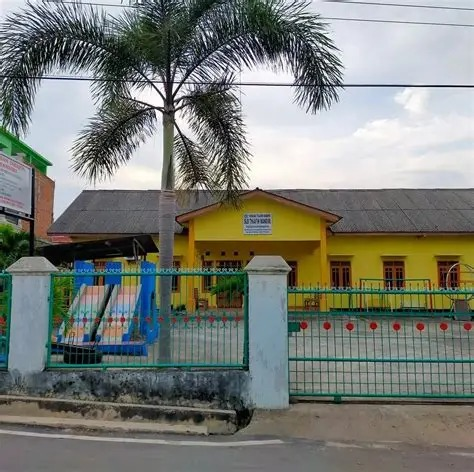

Kelola pendidikan, layanan terapi, dan keuangan yayasan dalam satu ruang kerja yang tertata.

Masuk untuk mengelola keuangan pendidikan dan terapi anak.
Akses khusus admin dan superadmin. Hubungi pengelola yayasan untuk mendapatkan akun.
Backend belum dihubungkan. Isi URL deployment GAS pada config.js, lalu muat ulang.